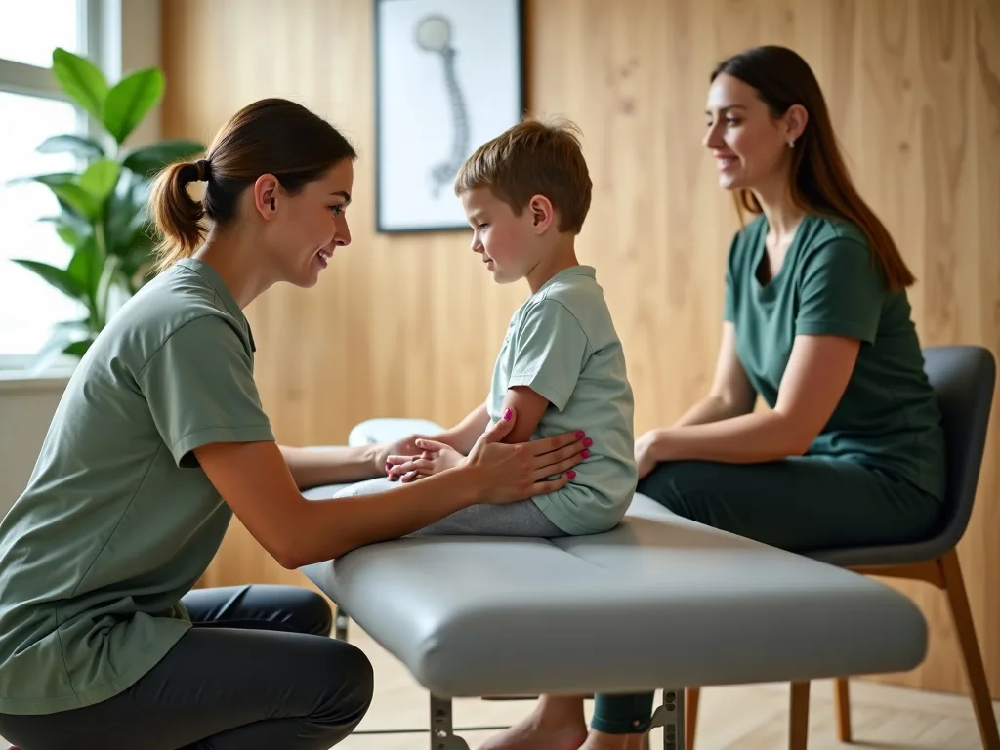
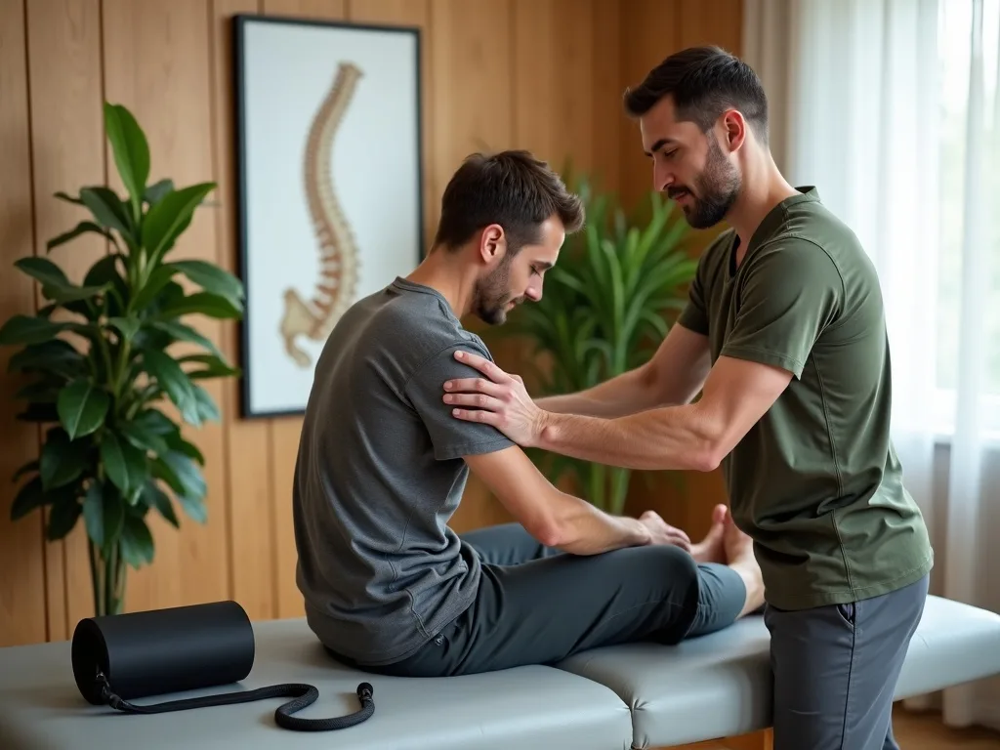

“Nobody could see me today.”
The valley's clinics book out a week ahead and then hand you a ten-minute slot. We hold same-day walk-in capacity every single day and stay open until seven so you are not choosing between your job and your back.
We are a general chiropractic clinic, not a specialist referral centre. These four make up almost everything that walks through the door — and if yours is not one of them, we will tell you who to see instead.
The valley's clinics book out a week ahead and then hand you a ten-minute slot. We hold same-day walk-in capacity every single day and stay open until seven so you are not choosing between your job and your back.
Chiropractic has a reputation for opaque pricing and long prepaid plans. Ours is on the page: $59 for the exam, $55 a visit after that. No packages, no contract, no conversation at the desk you did not expect.
An adjustment without an examination is a guess. Your first visit here is forty-five minutes and most of it is history-taking and screening, because the point is to find out what is wrong before anyone touches you.
After a collision, the first 72 hours matter twice over. Whiplash rarely hurts at the roadside. It arrives two days later as a neck that will not turn and a headache behind the eyes. We examine, document and treat — and because the documentation is also what your claim runs on, we write it properly the first time.
You pay nothing at the visit in most cases. We bill the at-fault carrier or your own med-pay, and we deal with the adjuster or your attorney directly so the paperwork is not one more thing on your list. Bring a claim number if you have one; if you do not, we will help you open it.

Gentle enough for a seven-year-old and a third trimester. Children and pregnant patients are not adjusted the way a forty-year-old with a desk job is. Both get low-force technique — sustained contact and instrument-assisted work rather than the classic manual thrust — and prenatal care here is Webster-certified.
Most of what we see in pregnancy is pelvic and low-back pain in the second and third trimester, and most of what we see in children is posture, sports knocks and the occasional stubborn neck. As always: if an adjustment is not the right call, we will say so.

For people who train, and intend to keep training. The shoulder that flares whenever you go back to full load. The hip that clicks on the third mile. Recurring strains usually mean a mobility restriction somewhere else in the chain, which is why we assess the whole movement rather than the sore spot.
Adjustment plus soft-tissue work, plus two or three things to do between visits. The homework is the part that keeps it fixed, and we would rather give you four exercises you will actually do than twelve you will not.
The everyday reasons people finally book something. Lower-back pain that has been there long enough that you have stopped mentioning it. A neck locked from a monitor set too low. And tension headaches, which surprisingly often turn out to be cervical rather than anything happening in your head.
These are the bread and butter of a chiropractic clinic and the most predictable to treat. Most people are in the four-to-eight visit range, and you should feel a change well before the end of that.
What happened, when it started, what makes it worse, what you have already tried. Fifteen minutes, uninterrupted.
Posture, range of motion, orthopaedic and neurological screening. Imaging only if the exam actually calls for it.
What we found, in plain language, on a screen you can see — including how long it should take and what it will cost.
Usually your first adjustment the same visit, plus two or three things to do at home. No twelve-month plan.